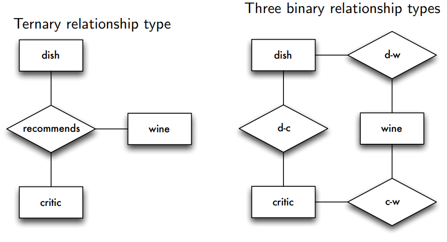
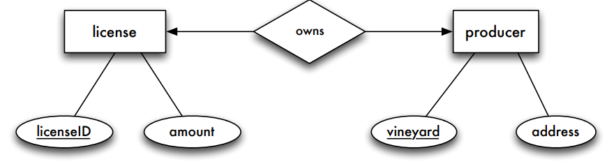

The Entity Relationship Model¶
Learning Goals
- Create non-trivial ER diagrams
- Assess the quality of an ER diagram
- Perform and explain the mapping of ER diagrams to relations
- Use a particular ER notation properly
Steps of Database Design¶
- Requirements analysis
- What are we dealing with?
- Mapping onto a conceptual model (conceptual design)
- What data and relationships have to be captured?
- Mapping onto a data model (logical design)
- How to structure data in a specific model (here: the relational model)?
- Realization and implementation (physical design)
- Which adaptations and optimizations does a specific DBMS require?
Basics of Entity Relationship Model¶
Entity and Entity Types¶
Entities are objects of the real world about which we want to store information
Entities are grouped into entity types
The extension of an entity type (entity set) is a particular collection of entities.
Attributes¶
Attributes model characteristics of entities or relationships
- All entities of an entity type have the same characteristics
- Attributes are declared for entity types
- Attributes have a domain or values set
Single-Valued vs Multi-Valued¶
A person might have multiple phone numbers (or a single one)

Simple vs Composite¶
An address can be modeled as a string or composed of street and city

Stored vs Derived¶
Eg. birthday and age

Keys¶
A (super) key consists of a subset of an entity type's attributes E(A_1,\dots,A_m) $$ {S_1,\dots,S_k} \subseteq {A_1, \dots, A_m} $$ The attributes S_1, \dots S_k of the key are called key attributes
The key attribute's values uniquely identify an individual entity
Candidate Key¶
A candidate key corresponds to a minimal subset of attributes that fulfills the above condition
Primary Key¶
If there are multiple candidate keys, one is chosen as primary key
Primary key attributes are marked by underlining

Relationships¶
Relationships describe connections between entities
Relationships between entities are grouped into relationship types

An association between two or more entities is called relationship (instance).
A relationship set is a collection of relationship instances.
Mathematical¶
A relationship type R between entity types E_1, \dots, E_n can be considered a mathematical relation
Instance of a relationship type R: $$ R \subseteq E_1 \times \dots \times E_n $$ A particular element (e_1,\dots,e_n)\in R is called an instance of the relationship type with e_i \in E_i for all 1 \leq i \leq n
Role Names¶
Role names are optional and used to characterize a relationship type.
- Especially useful for recursive relationship types, i.e., an entity type is participating multiple times in a relationship type.
Attributes of Relationship Types¶
Relationship types can also have (descriptive) attributes.

Summary of Basics¶
student take courses
See "animation" in DBS3 slides p 39
Characteristics of Relationship Types¶
Degree¶
- Number of participating entity types
- Mostly: binary
- Rarely: ternary
- In general: n-ary or n-way (multiway relationship types)

Cardinality Ratio / Cardinality Limits / Participation Constraint¶
- Number of times entities are involved in relationship instances
- Cardinality ratio (Chen notation):
- 1:1, 1:N, N:M
- Participation constraint:
- partial or total
- Cardinality limits ([min,max] notation):
- [min, max]
Chen Notation¶
(im using \nrightarrow to express  )
)
1:1, 1:N and N:1 can be considered partial functions (often also a total function)
- 1:1 relationship: R:E_1\nrightarrow E_2 and R^{-1}: E_2 \nrightarrow E_1
- 1:N relationship: R^{-1}: E_2 \nrightarrow E_1
- N:1 relationship: R:E_1\nrightarrow E_2
also referred to as functional relationship
The "direction" is important!
The function always leads from the "N" entity type to the "1" entity type.
Graphical Notation¶
Participation Constraint¶
Total
Each entity of an entity type must participate in a relationship, i.e. it cannot exist without any participation (E_2 in the left example)
Partial
Each entity of an entity type can participate in a relationship, i.e., it can exist without any participation.
Graphical Notation¶

Example Relationship¶

Min-Max Notation¶
Special values:
- for min: 0
- for max: *
[0,*] represents no restrictions \to default
The book uses a slightly different notation: 1..* instead of [1, ∗]

Additional Concepts¶
Weak Entity Types¶
The existence of a weak entity depends on the existence of a strong entity (aka. the identifying or owning entity) associated by an identifying relationship
- Total participation on the weak entity type
- Only in combination with 1:N (N:1) (or rarely also 1:1) relationship types
- The strong entity type is always on the "1"-side
- Weak entities are uniquely identifiable in combination with the corresponding strong entity's key
- The weak entity type's key attributes are marked by underlining with a dashed line (partial key, discriminator)
ISA Relationship Type¶
Specialization and generalization is expressed by the ISA relationship type (inheritance)
-
Each sparkling wine entity is associated with exactly one wine entity
\leadsto sparkling wine entities are identifiable by the functional ISA relationship
-
Not every wine is also a sparkling wine
-
Attributes of entity type wine are inherited by entity type sparkling wine
- The cardinalities are always
- ISA(E_1[1,1],E_2[0,1])
- Each entity of entity type E_1 (sparkling wine ) participates exactly once, entities of entity type E_2 (wine) participates at most once
Special Characteristics¶
- Overlapping specialization
- An entity may belong to multiple specialized entity sets
- separate ISA symbols are used
- An entity may belong to multiple specialized entity sets
- Disjoint specialization
- An entity may belong to at most one specialized entity set
- arrows to a shared ISA symbol in the diagram
- An entity may belong to at most one specialized entity set
Attributes¶
Lower-level entity types inherit:
- attributes of the higher-level entity type
- participation in relationship types of the higher-level entity type
Lower-level entity types can:
- have attributes
- participate in relationship types that the higher-level entity does not participate in
Participation Constraints¶
Total generalization/specialization
- Each higher-level entity must belong to a lower-level entity type
- Notation: double line
Partial generalization/specialization (default)
- Each higher-level can (may or may not) belong to a lower-level entity type
Alternative Notations¶
For alternative notations see DBS3 slides p 108
Mapping Basic Concepts to Relations¶
- Entities correspond to nouns, relationships to verbs
- Each statement in the requirement specification should be reflected somewhere in the ER schema
- Each ER diagram (ERD) should be located somewhere in the requirement specification
- Conceptual design often reveals inconsistencies and ambiguities in the requirement specification, which must first be resolved.

Basic Approach
- For each entity type \to relation
- Name of the entity type \to name of the relation
- Attributes of the entity type \to Attributes of the relation
- Primary key of the entity type \to Primary key of the relation
We do not care about the order of attributes in this context!
Mapping of N:M Relationship Types¶

Basic Approach
- New relation with all attributes of the relationship type
- Add the primary key attributes of all involved entity types
- Primary keys of involved entity types together become the key of the new relation
Key attributes "imported" from involved entity types (relations) are called foreign keys
In General¶
Mapping of 1:N Relationship Types¶

Basic Approach
- New relation with all attributes of the relationship type
- Add the primary key attributes of all involved entity types
- Primary key of the "N"-side becomes the key in the new relation
Initial
Improved by Merging
Relations with the same key can be combined, but only these and no others!
If the participation is not total, merging requires null values for the foreign key. In such cases, it might be preferable for some applications to have a separate relation.
Mapping of 1:1 Relationship Types¶

- New relation with all attributes of the relationship type
- Add primary key attributes of all involved entity types
- Primary key of any of the involved entity types can become the key in the new relation
Initial
Improvement
Or
It is best to extend a relation of an entity type with total participation
Summary: Mapping Relationship Types to Relations¶
M:N
- New relation with all attributes of the relationship type
- Add attributes referencing the primary keys of the involved entity type relations
- Primary key: set of foreign keys
1:N
- Add information to the entity type relation of the “N”-side:
- Add foreign key referencing the primary key of the “1”-side entity type relation
- Add attributes of the relationship type
1:1
- Add information to one of the involved entity type relations:
- Add foreign key referencing the primary key of the other entity type relation
- Add attributes of the relationship type
Foreign Keys¶
A foreign key is an attribute (or a combination of attributes) of a relation that references the primary key (or candidate key) of another relation
Example
- \relation{course}{\pk{courseID}, title, ects, \color{darkred}{taughtBy \to professor}}
- \relation{professor}{\pk{empID}, name, rank, office}
Here \mathrm{taughtBy} is a foreign key referencing relation professor
Alternative Notation
- \relation{course}{\pk{courseID}, title, ects, \color{darkred}{taughtBy}}
- \relation{professor}{\pk{empID}, name, rank, office}
Foreign key: \mathrm{course.taughtBy \to professor.empID}
Notation for composite keys: \{R.A_1, R.A_2\} \to \{S.B_1, S.B_2\}
Mapping Additional Concepts to Relations¶
Weak Entity Types¶
Entities of a weak entity type are
- existentially dependent on a strong entity type
- uniquely identifiable in combination with the strong entity type's key
Mapping:
- New relation with all attributes of the relationship type
- Add primary key attributes of all involved entity types
- Foreign key of the "N"-side becomes the key in the new relation
Initially
- \relation{wine}{color,\pk{name}}
- \relation{vintage}{\pk{name\to wine, year}, residualSweetness}
- \relation{belongsTo}{\pk{name \to wine, year \to vintage}}
Merged
Weak entity types and their identifying relationship types can always be merged
- \relation{wine}{color,\pk{name}}
- \relation{vintage}{\pk{name\to wine, year}, residualSweetness}
More complex example in DBS3 slides p 157
Recursive Relationship Types¶

Mapping just like standard N:M relationship types and renaming of foreign keys
- \relation{area}{\pk{name}, region}
- \relation{border}{\pk{from\to area, to \to area}}
Recursive Functional Relationship Types¶

Mapping just like standard 1:N relationship types and merging
- \relation{critic}{\pk{name}, organization, mentor \to critic}
N-ary Relationship Types¶

Entity Types
- All participating entity types are mapped according to the standard rules
- \relation{critic}{\pk{name}, organization}
- \relation{dish}{\pk{description}, sideOrder}
- \relation{wine}{color, \pk{WName}, year, residualSweetness}
N-ary Relationship Types (N:M:P)
- \relation{recommends}{\pk{WName \to wine, description \to dish, name \to critic}}
N:M:1 Relationship Type¶

Relations
- \relation{student}{\pk{studID}, name, semester}
- \relation{course}{\pk{courseID}, title, ects}
- \relation{professor}{\pk{empID}, name, rank, office}
- \relation{grades}{\pk{studID\to student, courseID\to course},empID \to professor, grade}
A student + course only exists once in this relation, since the professor is the (1). Therefore, the professor is not part of the primary key.
Multi-Valued Attributes¶
Relations
- \relation{person}{\pk{PID}, name}
- \relation{phoneNumber}{\pk{PID \to person, number}}
Composite Attributes¶
Include the component attributes in the relation
- \relation{person}{\pk{PID}, name, street, city}
Derived Attributes¶

Ignored during mapping to relations, can be added later by using views
Overview of the steps¶
- Regular entity type
- Create a relation, consider special attribute types
-
Weak entity type
- Create a relation
-
1:1 binary relationship type
- Extend a relation with foreign key
- 1:N binary relationship type
- Extend a relation with foreign key
- N:M relationship type
- Create a relation
- N-ary relationship type
- Create a relation
Relational Modeling of Generalization¶
Alternative 1 - Main Classes¶
A particular entity is mapped to a single tuple in a single relation (to its main class)
- \relation{eployee}{\pk{empID}, name}
- \relation{professor}{\pk{empID}, name, rank, office}
- \relation{assistant}{\pk{empID}, name, department}

Alternative 2 - Partitioning¶
Parts of a particular entity are mapped to multiple relations, the key is duplicated
- \relation{eployee}{\pk{empID}, name}
- \relation{professor}{\pk{empID \to employee}, rank, office}
- \relation{assistant}{\pk{empID\to employee}, department}
Alternative 3 - Full Redundancy¶
A particular entity is stored redundantly in the relations with all its inherited attributes
- \relation{eployee}{\pk{empID}, name}
- \relation{professor}{\pk{empID}, name, rank, office}
- \relation{assistant}{\pk{empID}, name, department}
Alternative 4 - Single Relation¶
All entities are stored in a single relation. An additional attribute encodes the membership in a particular entity type.
- \relation{employee}{\pk{empID}, name, {\color{darkred}{type}}, rank, office, department}
Appendix¶
Appendix can be seen in DBS3 slides 185